CSAPP Learning #
This document is specially for Chapter 12 of book CSAPP.
Concurrent Programming 的三种实现 #
Concurrent Programming with Processes #
特点：对于每一个client，server都会 fork() 一个新的子进程对应处理。
优点：每个子进程都有各自独立的虚拟内存，运行独立而安全。
缺点：
- 子进程无法直接共享信息，只能借助IPC (interprocess communications) 进行，
- 此外IPC和运行切换上下文时间成本高。
Concurrent Programming with I/O multiplexing #
特点：基于I/O多路复用。
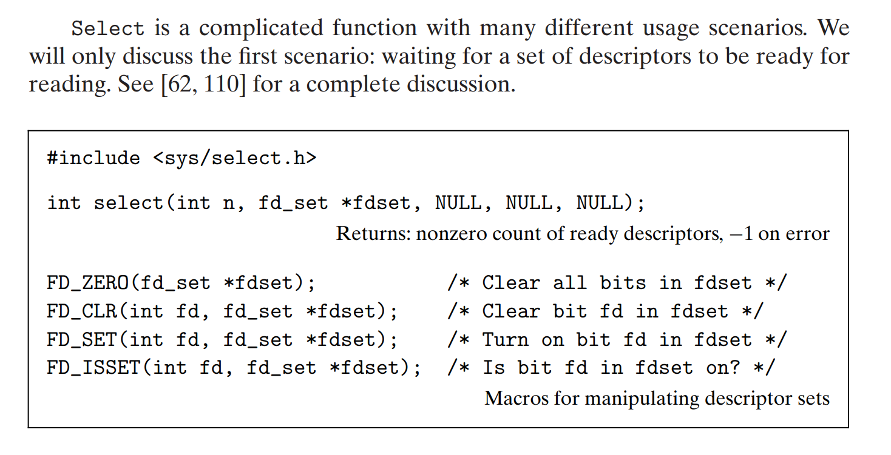
即我们人为的编辑了一张 fdset，并通过 select 告诉系统挂起原进程，监听这个集合里面的对应文件的读写操作，select 监听到后，也会重置 fdset，告诉用户哪个文件的读写被监听到。
fdset 实质上是一个n位二进制数，低往高第k位代表是否监听了文件描述符为k的文件。
我们用 FD_ZERO 等这四个宏来操作这张 fdset 。
网络文件的读写操作直接点对点进行，不需要对stdin/stdout重定向。
案例 #
CSAPP书中用结构体 pool 维护了这么一个事情
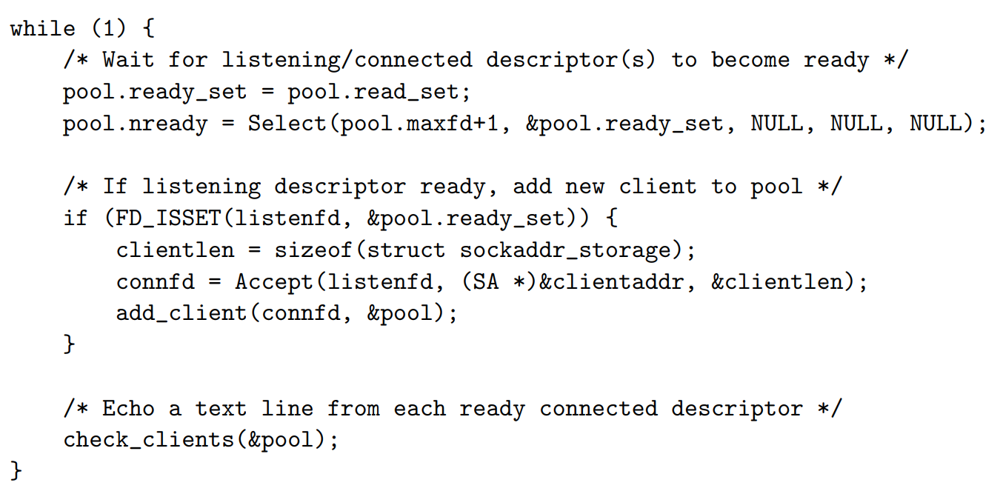
在一个大的 while(1) 里面:
- 一开始
pool的read_set里面只有listenfd和stdin - 然后
ready_set和read_set同步，select挂起ready_list - 如果是listen_fd被监听到了，那么就
accept()建立链接，并把它加到池子里
我们通过 pool 真正的实现了多个文件同时打开的高并发模式。
优缺点 #
优点：
- 对
ready_set的管控程度高，可以决定对fd的优先级逻辑 - 运行在同一进程中，可以共享数据
- Debug更加容易
- 没有上下文开销，性能高
缺点：
- 代码复杂度高
- 本质是单进程，容易被卡死 (vulnerable to a malicious client that sends only a partial text line and then halts)
- 无法利用多核CPU
Concurrent Programming with Threads #
一个进程中产生若干线程，每个线程都有独立的context，包括线程 ID (TID)、程序计数器 (PC)、寄存器集合，以及独立的程序栈 (Stack)。
但是，一个进程中所有线程共享相同的虚拟地址。
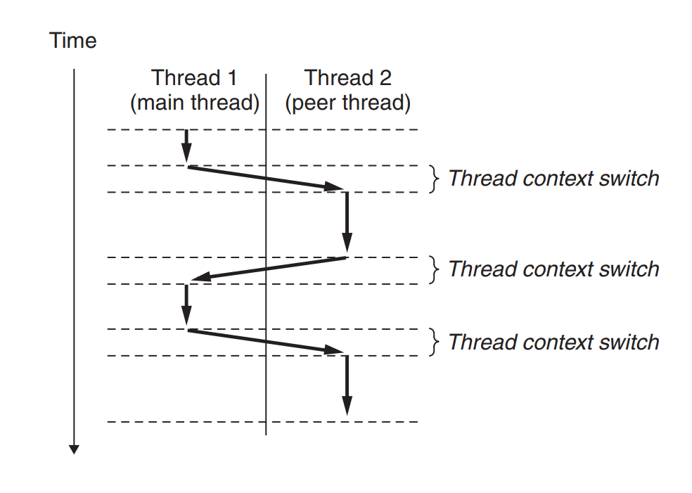
这里会发生context switch，但是相比进程而言更快。它会由于慢的 sleep() 或 read 等系统函数触发，也会因为系统内部定时器触发。
C语言线程实现：pthread #
void *thread(void *vargp) /* Thread routine */
{
printf("Hello, world!\n");
return NULL;
}
人工声明某个线程内部做什么事情，传到下面func *f的地方。
int pthread_create(pthread_t *tid, pthread_attr_t *attr, func *f, void *arg);
pthread_t pthread_self(void);
void pthread_exit(void *thread_return);
int pthread_cancel(pthread_t tid);
int pthread_join(pthread_t tid, void **thread_return);
int pthread_detach(pthread_t tid);
通过 pthread_create 创建一个线程。
pthread_self 返回当前线程tid值。
pthread_exit 显式终止线程，如果进程的主线程调用，那么会先等同伴线程都终止，在终止主线程和进程。
pthread_cancel 传入tid，终止该线程。
如果某个线程调用exit()函数终止，那么会把所有线程和进程一并终止掉。
pthread_join 等待特定线程终止。
pthread_detach 使得线程从默认的joinable变成detached，这意味着它不能被其他线程监控或终止，也意味着它的内存区域清理发生在终止后系统自动清理。
注意到thread_return指针是为了回收相应joinable线程的内存空间，防止内存泄漏。
#include <pthread.h>
pthread_once_t once_control = PTHREAD_ONCE_INIT;
int pthread_once(pthread_once_t *once_control, void (*init_routine)(void));
初始化，定义一些全局变量时用。
案例 #
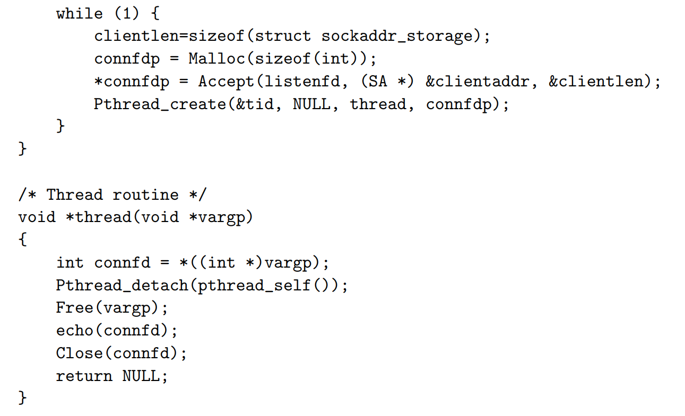
Shared Variables #
有三种类型
- 全局变量
- 局部静态变量
- 局部自动变量
前两者存在数据读写区里面，而局部自动变量存在独立的程序栈中。
但是我们要注意， local automatic variables such as msgs can also be shared.
做法：通过跨栈指针，把某个变量地址贴到全局变量，然后直接对地址操作读写。
Synchronizing Threads with Semaphores #
void *thread(void *vargp)
{
long i, niters = *((long *)vargp);
for (i = 0; i < niters; i++)
cnt++;
return NULL;
}
我们同时运行两个这个线程，最后会发现 cnt的值不等于2*niters，并且每次运行结果都不相同。
为什么？ #
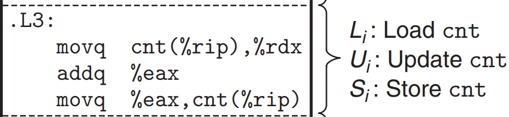
cnt(%rip) 是特殊相对寻址方式，因为 cnt 是全局变量。
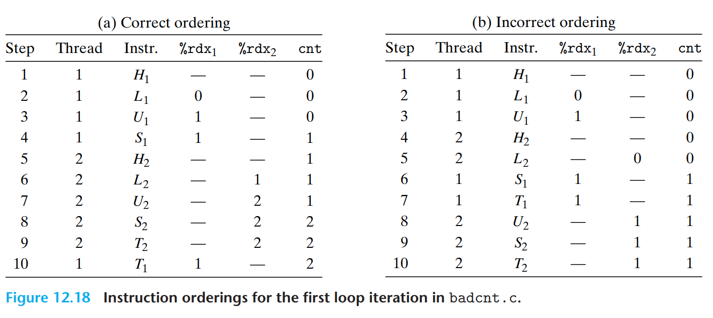
因为这里线程工作顺序可能会乱套。汇编的角度而言，cnt++ 的过程包括了Load, Update, Save三步的过程。如果两个 cnt++ 的时序错乱了，就会出现存值的错位情况。
为什么有两个%rdx?
- 因为寄存器值虽然确实在CPU中计算的，但它们也同样存在线程的context里面，不同线程之间的寄存器不共用。
Process Graphs 进程图 #
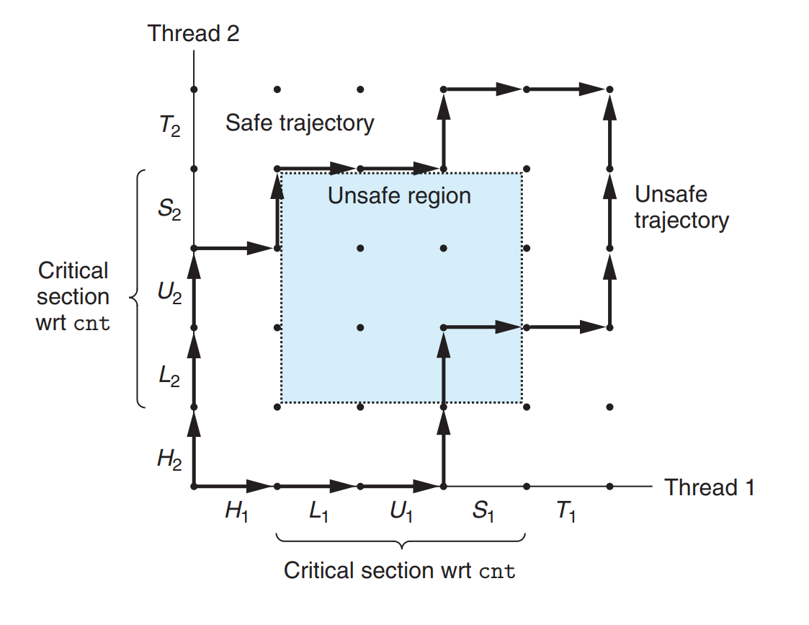
根据两个进程的执行走向transition顺序，我们可以画出进程图 trajectory（轨迹）
在上面案例中，我们的 Load – Update – Save 是关键步骤，绝对不可以互相打断，即在 Unsafe Region 中执行会导致出错。
我们必须要 synchronize（同步），a classic approach is based on the idea of a semaphore（信号量），实现 Mutual Exclusion（互斥）的机制。
- 缺陷：进程图是单核下的产物，多核运作会失效，但是上锁的核心思想一致。
Semaphores 信号量 #
Edsger Dijkstra发明。
P(s)- 如果 s 非零，那么P将s递减1后马上返回。
- 如果 s = 0，那么挂起该线程，直到被
V(s)重新将s置非0；
V(s)- 将s递增1，如果有多个被挂起的线程为0，那么只会唤醒其中一个，并将s置1。
在C语言中通过以下方法维护：
#include <semaphore.h>
int sem_init(sem_t *sem, 0, unsigned int value);
int sem_wait(sem_t *s); /* P(s) */
int sem_post(sem_t *s); /* V(s) */
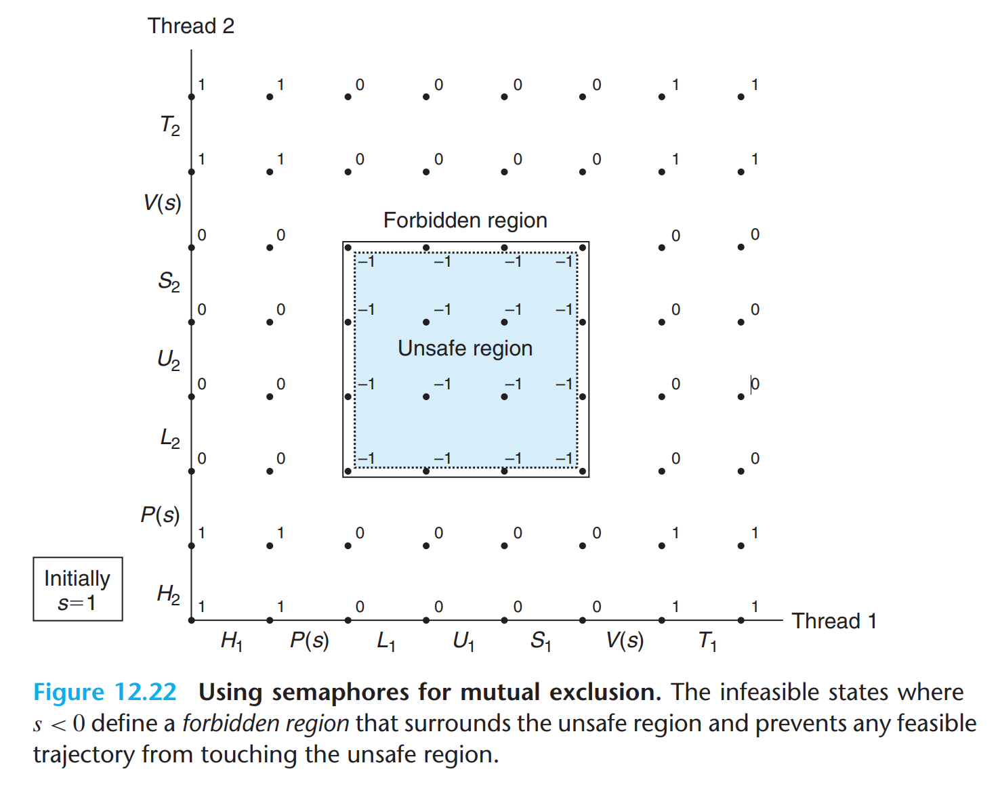
这个s相当于是一个开启进入 Critical Session 的钥匙锁，一人一用。
我们把核心代码改成：
P(&mutex);
cnt++;
V(&mutex);
为什么P和V操作可以保证是原子性的？
因为经过了操作系统和硬件的特殊封装，提供给它们特用的自旋锁。
Producer-Consumer Problem #
The producer generates items and inserts them into a bounded buffer. The consumer removes items from the buffer and then consumes them.
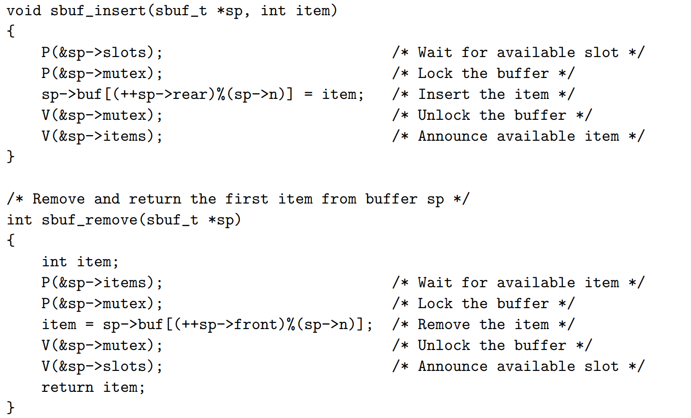
注意这个过程中对buf区域的保护。
Readers-Writers Problem #
这是互斥问题的泛化形态称呼。特点是读可共享，写需独占。
两类做法：
- 第一类：利好Readers。只有当没有任何Reader在读数据，Writer才有权限工作。换言之，拿缓冲区钥匙权限等级 Readers > Writers
- 第二类：利好Writers。Writer只需要待在序列中的Readers读完，就可以上去工作，而不管排队时后面来的Readers。
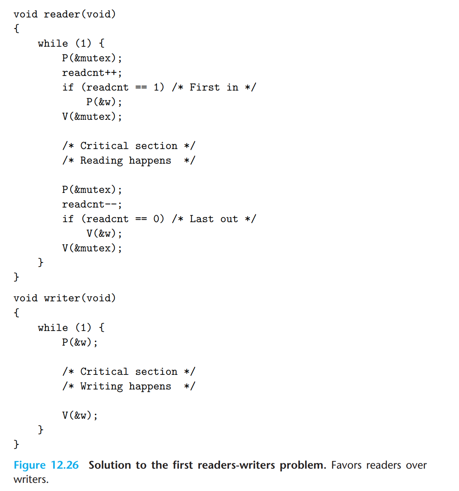
注意 readcnt == 0 的条件。
我们也可以通过这个模型实现类似I/O多路复用中的Event Driven机制。
线程与并行编程 #
实际的CPU是多核并行，而并行（Parallel）是并发（Concurrent）的subset，要针对并行进行优化。
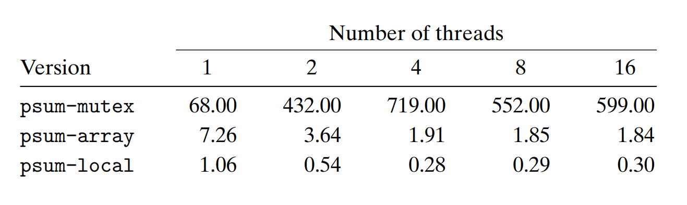
针对
- 唯一全局变量上锁
- 全局数组，每一个元素放给一个进程修改
- 使用局部寄存器，最后一次才加给全局变量
这三种方法来运行 psum 的求和运算任务，我们发现上锁解锁，访问主存的时间成本很高，并且过度上锁拖累效率。
我们用Speedup（加速比）以及Efficiency（并行效率）衡量增加线程数带来的改变。
$$S_p = \frac{T_1}{T_p}$$
$$E_p = \frac{T_1}{p*T_p}$$
弱扩展与强扩展（Weak/Strong Scaling）是两个重要的性能考核指标。
- 前者控制线程数和处理量都增加；
- 后者只控制线程数增加，处理量保持不变。
- 一般弱扩展反应更真实，更有参考价值。
其他并发问题 #
线程安全性 #
有四类不安全的线程操作：
- 不保护共享变量
- 函数被多重调用，比如
rand伪随机种子生成- 解决方法：重写函数
- 函数返回指向static变量的指针
- 解决方法：
- 重写函数，参数项让caller提供指向储存结果的指针，消灭共享变量
- 如果没法修改这个函数：先上锁再调用函数复制结果后解锁 (lock-and-copy)
- call了线程不安全的函数
- 解决方法：同样是lock-and-copy
Reentracy 可重入性 #
一种特殊的线程安全的函数，它消灭了所有共享变量，改用各自独立的程序栈存储
- 显式可重入：函数不调用任何全局变量
- 隐式可重入：参数项让caller自行提供指向储存结果的指针，需要保证传入的指针指向的是非共享数据
使用已有库中函数 #
Most Linux functions, including the functions defined in the standard C library (such as malloc, free, realloc, printf, and scanf), are thread-safe, with only a few exceptions.
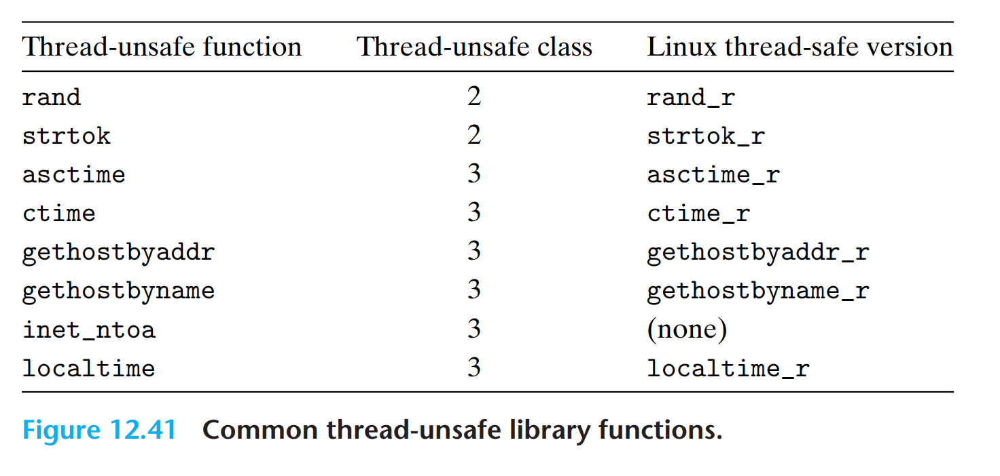
Race 竞态条件 #
int main()
{
pthread_t tid[N];
int i;
for (i = 0; i < N; i++)
Pthread_create(&tid[i], NULL, thread, &i);
for (i = 0; i < N; i++)
Pthread_join(tid[i], NULL);
exit(0);
}
/* Thread routine */
void *thread(void *vargp)
{
int myid = *((int *)vargp);
printf("Hello from thread %d\n", myid);
return NULL;
}
发生了什么？
Pthread_create 的时候， &i 把 i 变量的地址交给了新创建的进程，这意味着新进程有直接读写i原值的权限。
如果新线程的 int myid = *((int *)vargp); 执行的比 i++ 更慢，就意味着i的值不会式预期所示的。这叫做Race。
解决方法：
ptr = Malloc(sizeof(int));
*ptr = i;
Pthread_create(&tid[i], NULL, thread, ptr);
/*In function main*/
Free(vargp);
/*In Thread*/
注意这里异步性的问题，我们的 malloc() 要由创建的线程回收。
Deadlock 死锁 #
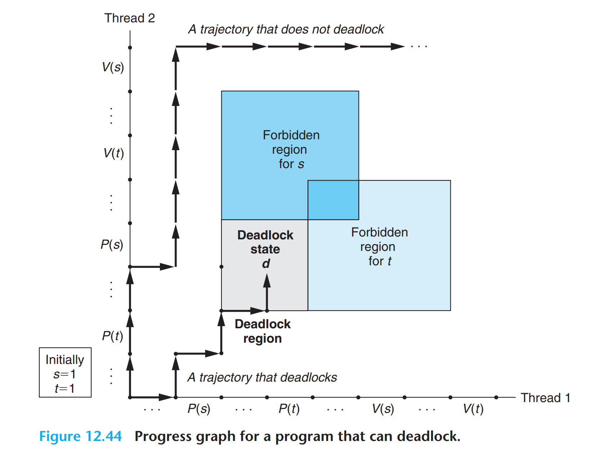
途中的 Deadlock State 进入后s和t都被上锁了，换言之怎么动都动不了。
这类问题很难预测，也很难解决。可以通过一个简单的工作来预防：
Mutex Lock Ordering Rule - acquires its mutexes in order and releases them in reverse order.
即保证所有的包含嵌套关系成立。
By Tab_1bit0